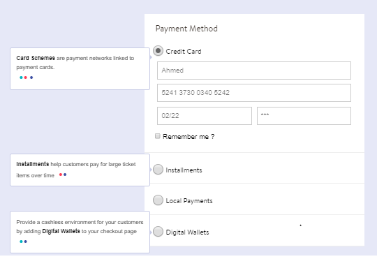

What is Custom Payment Form?
You can also build your own custom payment form without using default payment template provided by PayFoRT.

Figure 1
How it works?
-
You develop your own custom payment details form that collects the card details (credit card number, expiry date, CVV), and sends the request to PayFORT server.
-
PayFort receives the payment details and returns the response which includes the token to your payment processing page.
-
You use the token to complete the Authorization or Purchase operation.
To learn more about Tokens and Tokenization process visit this link
Integration Flow

Figure 2
Here is the Integration flow description
- The customer begins the checkout process on your website.
- Your website displays the custom payment form to collect the card’s details. Then the Customer enters the card’s details on the payment page.
- PayFORT checks the card details.
- PayFORT creates a token for the Customer transaction and sends it to the payment page.
- The Payment page then sends a JSON request along with the token to PayFORT.
- In case your page receives from PayFORT server a 3-D Secure URL 3ds_url, and response indicating that a 3ds check is required then:
- Your payment page redirects the Customer to the ACS to check his card enrollment.
- The Customer enters authentication data on the ACS platform.
- The ACS performs authentication of the Customer’s data and sends the authentication results to PayFORT.
- PayFORT completes the operation based on the 3-D Secure response and returns the response to your payment page.
- PayFORT sends the payment results to your site.
For more details on Tokens and Tokenization process visit the link
Give It a Try
Use one of our test cards and corresponding CVV to try out for yourself.
You can use any expiry date (mm/yy), as long as it's in the future.
Endpoints
An endpoint is one end of a communication channel and your merchant site will communicate with the PayFORT resources using Endpoints. For PayFORT APIs, an endpoint includes a URL of PayFORT server or service.
Sandbox
POST https://sbcheckout.payfort.com/FortAPI/paymentPage
Live
POST https://checkout.PayFort.com/FortAPI/paymentPage
Use Endpoints in your Custom Payment Page
If you are planning to use your own custom payment page then you can use the endpoints for testing and and also for going live.
Before you start
Make sure you have your access_code. Refer figure 3. You can find it in the backoffice, under Integration Settings Security Settings > Access Code. If you don't have an account with us yet, you can create a test account by visiting the link. You can also get started with an active account by visiting this link

Figure 2 : Uploading custom template
The Payment Page Template available in the backoffice provides you the feature to create a custom payment processing page. Refer to the figure 2. Once you upload your custom payment page our support team will validate the same.

Figure 3: Generating Access Code.
Start testing
Ready to try out your integration? Create a test account to get everything working perfectly before going live.
Add the code snippet to your site
The following code snippet shown here is an example of the start of the payment process. You can refer to this example, replacing the supplied acccess_code with your own. The card token will be posted via the URL specified in the form's action attribute.
<html>
<body>
<form method="post" action="https://sbcheckout.payfort.com/FortAPI/paymentPage" id=form1 name=form1>
<input type="hidden" NAME="service_command" value="TOKENIZATION">
<input type="hidden" NAME="language" value=" ">
<input type="hidden" NAME="merchant_identifier" value=" ">
<input type="hidden" NAME="access_code" value=" ">
<input type="hidden" NAME="signature" value="">
<input type="hidden" NAME="return_url" value=" ">
<input type="hidden" NAME="merchant_reference" value="">
<input type="hidden" NAME="card_number" value="">
<input type="hidden" NAME="expiry_date" value="">
<input type="hidden" NAME="card_security_code" value="">
<input type="hidden" NAME="card_holder_name" value=" ">
<input type="submit" value="" id="submit2" name="">
</form>
</body>
</html>
The above code snippet is an HTML based form that will post a request to PayFORT server. The request parameters are also added in the input tag of the code. However, If you are not familiar with HTML tags and forms then you can checkout this site.
The form action tag consists of the endpoints . This will come handy whenever submit action is performed on the page. Once the form is submitted the parameters provided in the form would be sent to the PayFORT server and Endpoints will serve as communication link between your page and PayFORT server.
Here is the description of the input parameters:
- The very first input parameter is the service command Tokenization. This service command will provide the server with a valid command that it should perform once it receives the request.
- The second input parameter denotes the language. There are two options which you can use. The languages supported by our platform are en/ar. You can provide either english(en) or arabic(ar) in the input parameter value.
- The third input parameter is merchant identifier and the value of the same can be check in the backoffice.
- The fourth input parameter is the access code and again its value can be found in backoffice.
- The fifth input parameter is the signature which is a SHA based and can be generated in the backoffice.
- The sixth input parameter is the return url which the url of the page where you would like to receive the response of the PayFORT server or the response to your request.
- The seventh input parameter is the merchant reference which is nothing but unique order number.
- You need to provide the values of all the input parameters in the value field before your payment page can send request to the PayFORT server.
- Finally the laster input parameter would be a submit parameter which would submit the form and the request would be forwarded to the PayFORT server.
For more details on Tokens and Tokenization process visit the link
Payment Page Customization
When you begin designing your own custom payment page you will also need to style your custom payment page so that it is in line with the look and feel of your website. Inorder to style your custom payment page you will require CSS files and within those files you need use the css classes. If you are new to HTML and CSS don't worry you can visit this link to learn about HTML/CSS.
This is a list with all customizable CSS classes on the basic payment page:
- The
Wrapperclass
It is responsible for the total width of the form container and the background.
- The
Containerclass
It is responsible for the form’s shape and width.
- The
Popoverclass
It is responsible for the error messages.
- The
Half-containerclass
It is used to merge the date and CVV fields into one block if needed.
- The
Inputclass
It is the container of each single input field.
- The
Payclass
It is responsible for the submit button.
- The
Visa/ MasterCardclasses
It is used to change the color of the Visa/ MasterCard colors.
Go to Full API
Check out our full API by visiting this link
Need further help?
Thanks for using PayFort.com. If you need any help or support, then message our support team at support@payfort.com.